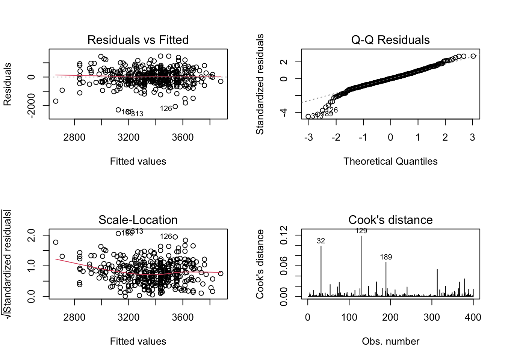

library(tidyverse)
library(olsrr)
library(car)
library(ResourceSelection)
library(DescTools)Final Exam
Import libraries.
Set path.
setwd("/Users/c2cypher/codebase/msda/msda-grad-school/sta-6443-902-data_analytics_algorithms/exam_2/final_exam")Read CSV and convert the data types of variables identified as categorical.
df = read.csv('birthweight_final.csv')
df$Black = as.factor(df$Black)
df$Married = as.factor(df$Married)
df$Boy = as.factor(df$Boy)
df$MomSmoke = as.factor(df$MomSmoke)
df$Ed = as.factor(df$Ed)
str(df)'data.frame': 400 obs. of 10 variables:
$ Weight : int 3657 3317 3232 2948 4564 2977 4394 2977 3855 2977 ...
$ Weight_Gr: int 0 1 1 1 0 1 0 1 0 1 ...
$ Black : Factor w/ 2 levels "0","1": 1 1 2 1 1 1 1 1 1 1 ...
$ Married : Factor w/ 2 levels "0","1": 2 1 1 2 2 2 1 2 2 1 ...
$ Boy : Factor w/ 2 levels "0","1": 2 2 2 2 2 1 2 1 1 2 ...
$ MomSmoke : Factor w/ 2 levels "0","1": 1 1 1 1 1 1 1 1 1 2 ...
$ Ed : Factor w/ 2 levels "0","1": 2 2 1 1 1 2 2 2 2 1 ...
$ MomAge : int 4 -5 -7 -4 5 -6 -1 -1 1 -2 ...
$ MomWtGain: int 2 0 -10 18 27 2 17 -12 10 -2 ...
$ Visit : int 3 3 3 3 3 3 3 3 3 1 ...Exercise 1)
Consider fitting a multiple linear regression to model Weight using possible explanatory variables; Black, Married, Boy, MomSmoke, Ed, MomAge, MomWtGain, and Visit (all predictors excluding Weight_Gr).
1) Perform the following four model selection methods and compare their best models. Comment on how they differ or similar in terms of selected variables in the final model. No need to interpret outputs.
• Stepwise selection with 0.01 p-value criteria for both entry and stay.
• Forward selection with 0.01 p-value criteria for entry.
• Backward selection with 0.01 p-value criteria for a stay.
• Adjusted R-squared criteria. NOTE: R output from Backward selection displays variables “removed” from each step.
Multiple Regression
q1.lm = lm(Weight ~ Black + Married + Boy + MomSmoke + Ed + MomAge + MomWtGain +
Visit, data = df)
summary(q1.lm)
Call:
lm(formula = Weight ~ Black + Married + Boy + MomSmoke + Ed +
MomAge + MomWtGain + Visit, data = df)
Residuals:
Min 1Q Median 3Q Max
-2433.18 -312.36 14.72 323.08 1562.40
Coefficients:
Estimate Std. Error t value Pr(>|t|)
(Intercept) 3249.006 120.298 27.008 < 2e-16 ***
Black1 -189.710 83.770 -2.265 0.0241 *
Married1 63.281 69.819 0.906 0.3653
Boy1 118.816 55.077 2.157 0.0316 *
MomSmoke1 -198.047 79.065 -2.505 0.0127 *
Ed1 71.241 56.300 1.265 0.2065
MomAge 3.048 5.305 0.574 0.5660
MomWtGain 12.136 2.117 5.733 1.98e-08 ***
Visit 13.626 37.691 0.362 0.7179
---
Signif. codes: 0 '***' 0.001 '**' 0.01 '*' 0.05 '.' 0.1 ' ' 1
Residual standard error: 547.1 on 391 degrees of freedom
Multiple R-squared: 0.1456, Adjusted R-squared: 0.1281
F-statistic: 8.328 on 8 and 391 DF, p-value: 1.901e-10Stepwise Selection
model.stepwise = ols_step_both_p(q1.lm, pent = 0.01, prem = 0.01, details = FALSE)
model.stepwise
Stepwise Selection Summary
-----------------------------------------------------------------------------------------
Added/ Adj.
Step Variable Removed R-Square R-Square C(p) AIC RMSE
-----------------------------------------------------------------------------------------
1 MomWtGain addition 0.089 0.087 20.7600 6201.2327 559.8163
2 MomSmoke addition 0.107 0.102 14.6830 6195.4042 555.0626
3 Black addition 0.127 0.120 7.4660 6188.2794 549.4600
-----------------------------------------------------------------------------------------Stepwise Model
model.lm.stepwise = lm(Weight ~ MomWtGain + MomSmoke + Black, data = df)
summary(model.lm.stepwise)
Call:
lm(formula = Weight ~ MomWtGain + MomSmoke + Black, data = df)
Residuals:
Min 1Q Median 3Q Max
-2450.50 -312.94 7.73 325.68 1471.38
Coefficients:
Estimate Std. Error t value Pr(>|t|)
(Intercept) 3435.615 32.505 105.695 < 2e-16 ***
MomWtGain 12.006 2.116 5.673 2.71e-08 ***
MomSmoke1 -237.799 77.271 -3.077 0.00223 **
Black1 -236.556 78.257 -3.023 0.00267 **
---
Signif. codes: 0 '***' 0.001 '**' 0.01 '*' 0.05 '.' 0.1 ' ' 1
Residual standard error: 549.5 on 396 degrees of freedom
Multiple R-squared: 0.1271, Adjusted R-squared: 0.1205
F-statistic: 19.22 on 3 and 396 DF, p-value: 1.185e-11Forward Selection
model.forward = ols_step_forward_p(q1.lm, pent = 0.01, details = FALSE)
model.forward
Selection Summary
-----------------------------------------------------------------------------
Variable Adj.
Step Entered R-Square R-Square C(p) AIC RMSE
-----------------------------------------------------------------------------
1 MomWtGain 0.0893 0.0870 20.7604 6201.2327 559.8163
2 MomSmoke 0.1069 0.1024 14.6832 6195.4042 555.0626
3 Black 0.1271 0.1205 7.4659 6188.2794 549.4600
-----------------------------------------------------------------------------Forward Selection Model
model.lm.forward = lm(Weight ~ MomWtGain + MomSmoke + Black, data = df)
summary(model.lm.forward)
Call:
lm(formula = Weight ~ MomWtGain + MomSmoke + Black, data = df)
Residuals:
Min 1Q Median 3Q Max
-2450.50 -312.94 7.73 325.68 1471.38
Coefficients:
Estimate Std. Error t value Pr(>|t|)
(Intercept) 3435.615 32.505 105.695 < 2e-16 ***
MomWtGain 12.006 2.116 5.673 2.71e-08 ***
MomSmoke1 -237.799 77.271 -3.077 0.00223 **
Black1 -236.556 78.257 -3.023 0.00267 **
---
Signif. codes: 0 '***' 0.001 '**' 0.01 '*' 0.05 '.' 0.1 ' ' 1
Residual standard error: 549.5 on 396 degrees of freedom
Multiple R-squared: 0.1271, Adjusted R-squared: 0.1205
F-statistic: 19.22 on 3 and 396 DF, p-value: 1.185e-11Backward Selection
model.backward = ols_step_backward_p(q1.lm, prem = 0.01, details = FALSE)
model.backward
Elimination Summary
---------------------------------------------------------------------------
Variable Adj.
Step Removed R-Square R-Square C(p) AIC RMSE
---------------------------------------------------------------------------
1 Visit 0.1453 0.130 7.1307 6187.8448 546.4642
2 MomAge 0.1445 0.1314 5.5158 6186.2385 546.0372
3 Married 0.1409 0.130 5.1599 6185.9146 546.4876
4 Ed 0.1364 0.1277 5.1841 6185.9688 547.1986
5 Boy 0.1271 0.1205 7.4659 6188.2794 549.4600
---------------------------------------------------------------------------Backward Selection Model
model.lm.backward = lm(Weight ~ MomWtGain + MomSmoke + Black, data = df)
summary(model.lm.backward)
Call:
lm(formula = Weight ~ MomWtGain + MomSmoke + Black, data = df)
Residuals:
Min 1Q Median 3Q Max
-2450.50 -312.94 7.73 325.68 1471.38
Coefficients:
Estimate Std. Error t value Pr(>|t|)
(Intercept) 3435.615 32.505 105.695 < 2e-16 ***
MomWtGain 12.006 2.116 5.673 2.71e-08 ***
MomSmoke1 -237.799 77.271 -3.077 0.00223 **
Black1 -236.556 78.257 -3.023 0.00267 **
---
Signif. codes: 0 '***' 0.001 '**' 0.01 '*' 0.05 '.' 0.1 ' ' 1
Residual standard error: 549.5 on 396 degrees of freedom
Multiple R-squared: 0.1271, Adjusted R-squared: 0.1205
F-statistic: 19.22 on 3 and 396 DF, p-value: 1.185e-11Adjusted R-squared Criteria
adj_r_sq = ols_step_best_subset(q1.lm)
adj_r_sq Best Subsets Regression
-------------------------------------------------------------------
Model Index Predictors
-------------------------------------------------------------------
1 MomWtGain
2 MomSmoke MomWtGain
3 Black MomSmoke MomWtGain
4 Black Boy MomSmoke MomWtGain
5 Black Boy MomSmoke Ed MomWtGain
6 Black Married Boy MomSmoke Ed MomWtGain
7 Black Married Boy MomSmoke Ed MomAge MomWtGain
8 Black Married Boy MomSmoke Ed MomAge MomWtGain Visit
-------------------------------------------------------------------
Subsets Regression Summary
--------------------------------------------------------------------------------------------------------------------------------------------------
Adj. Pred
Model R-Square R-Square R-Square C(p) AIC SBIC SBC MSEP FPE HSP APC
--------------------------------------------------------------------------------------------------------------------------------------------------
1 0.0893 0.0870 0.0775 20.7604 6201.2327 5065.9178 6213.2071 125357705.0611 314961.2141 789.4062 0.9199
2 0.1069 0.1024 0.091 14.6832 6195.4042 5060.1250 6211.3700 123238567.9566 310405.1540 778.0163 0.9066
3 0.1271 0.1205 0.1059 7.4659 6188.2794 5053.1393 6208.2368 120764046.4868 304925.3190 764.3196 0.8906
4 0.1364 0.1277 0.1114 5.1841 6185.9688 5050.9395 6209.9176 119772826.2237 303169.1473 759.9653 0.8854
5 0.1409 0.1300 0.1116 5.1599 6185.9146 5050.9720 6213.8549 119462530.2702 303128.3995 759.9203 0.8853
6 0.1445 0.1314 0.1103 5.5158 6186.2385 5051.3901 6218.1702 119266462.8033 303374.3231 760.6035 0.8860
7 0.1453 0.1300 0.1052 7.1307 6187.8448 5053.0558 6223.7680 119453866.2656 304595.5958 763.7420 0.8896
8 0.1456 0.1281 0.1014 9.0000 6189.7111 5054.9736 6229.6258 119720142.0535 306020.7931 767.4022 0.8938
--------------------------------------------------------------------------------------------------------------------------------------------------
AIC: Akaike Information Criteria
SBIC: Sawa's Bayesian Information Criteria
SBC: Schwarz Bayesian Criteria
MSEP: Estimated error of prediction, assuming multivariate normality
FPE: Final Prediction Error
HSP: Hocking's Sp
APC: Amemiya Prediction Criteria Since Model 6 has the biggest Adj. R-squared value (0.1314), it is the best model.
Adj. R-squared Model
model.lm.adj_r_sq = lm(Weight ~ Black + Married + Boy + MomSmoke + Ed + MomWtGain,
data = df)
summary(model.lm.adj_r_sq)
Call:
lm(formula = Weight ~ Black + Married + Boy + MomSmoke + Ed +
MomWtGain, data = df)
Residuals:
Min 1Q Median 3Q Max
-2401.07 -313.80 19.42 323.47 1547.41
Coefficients:
Estimate Std. Error t value Pr(>|t|)
(Intercept) 3270.007 72.733 44.959 < 2e-16 ***
Black1 -193.724 81.970 -2.363 0.0186 *
Married1 82.540 64.252 1.285 0.1997
Boy1 120.232 54.936 2.189 0.0292 *
MomSmoke1 -201.548 78.751 -2.559 0.0109 *
Ed1 75.466 55.803 1.352 0.1770
MomWtGain 12.209 2.106 5.797 1.38e-08 ***
---
Signif. codes: 0 '***' 0.001 '**' 0.01 '*' 0.05 '.' 0.1 ' ' 1
Residual standard error: 546 on 393 degrees of freedom
Multiple R-squared: 0.1445, Adjusted R-squared: 0.1314
F-statistic: 11.06 on 6 and 393 DF, p-value: 2.107e-11Final Models
Stepwise: y = 3435.615 + (12.006 * MomWtGain) - (237.799 * MomSmoke) - (235.556 * Black)
Forward: y = 3435.615 + (12.006 * MomWtGain) - (237.799 * MomSmoke) - (235.556 * Black)
Backward: y = 3435.615 + (12.006 * MomWtGain) - (237.799 * MomSmoke) - (235.556 * Black)
Best Subset (Adj. R-squared): y = 3270.007 - (193.724 * Black) + (82.54 * Married) + (120.232 * Boy) - (201.548 * MomSmoke) + (75.466 * Ed) + (12.209 * MomWtGain)
Conclusion:
The final models for stepwise, forward, and backward selection were composed of the same predictors (Black, MomSmoke, MomWtGain). Model 6 predictors (Black, Married, Boy, MomSmoke, Ed, MomWtGain) are included in the final model of the best subset strategy. Model 6 was chosen because it calculated the biggest Adj. R-squared (0.1314).
Answer the following questions from the best model determined by Stepwise selection with 0.01 p-value criteria.
2) Fit the linear regression with the best model determined by stepwise selection and comment on the diagnostics plot. Do not leave an observation that has Cook’s distance larger than 0.115. Re-fit the model if necessary. Finally, how many observations did you use in the final model?
Fit the linear regression
q2.lm.stepwise = lm(Weight ~ MomWtGain + MomSmoke + Black, data = df)
summary(q2.lm.stepwise)
Call:
lm(formula = Weight ~ MomWtGain + MomSmoke + Black, data = df)
Residuals:
Min 1Q Median 3Q Max
-2450.50 -312.94 7.73 325.68 1471.38
Coefficients:
Estimate Std. Error t value Pr(>|t|)
(Intercept) 3435.615 32.505 105.695 < 2e-16 ***
MomWtGain 12.006 2.116 5.673 2.71e-08 ***
MomSmoke1 -237.799 77.271 -3.077 0.00223 **
Black1 -236.556 78.257 -3.023 0.00267 **
---
Signif. codes: 0 '***' 0.001 '**' 0.01 '*' 0.05 '.' 0.1 ' ' 1
Residual standard error: 549.5 on 396 degrees of freedom
Multiple R-squared: 0.1271, Adjusted R-squared: 0.1205
F-statistic: 19.22 on 3 and 396 DF, p-value: 1.185e-11Diagnostic Plot
par(mfrow=c(2,2))
plot(q2.lm.stepwise, which = 1:4)
Diagnostic Plot Comments:
The QQ Plot illustrates most of the data points along the line, but there’s a few significant outliers on the left tail of the plot. Despite these few outliers, we can assume normality. The Residuals vs. Fitted Plot illustrates that variance around the estimated regression line is mostly constant with the exception of 1-2 outliers. The Scale-Location Plot indicates that the standardized residual slightly decreases as x increases; however, it is mostly linear where a majority of the data lies, so it assumes homoscedasticity. The Cook’s Distance Plot shows that some points are greater than 0.115.
Cook’s Distance
q2.cooks = which(cooks.distance(q2.lm.stepwise) > 0.115)
df[q2.cooks, ] Weight Weight_Gr Black Married Boy MomSmoke Ed MomAge MomWtGain Visit
129 1804 1 1 1 0 0 1 9 35 3Number of Observations
dim(df[-q2.cooks, ])[1] 399 10Refitted Model
q2.refitted.step = lm(Weight ~ MomWtGain + MomSmoke + Black, data = df[-q2.cooks, ])
summary(q2.refitted.step)
Call:
lm(formula = Weight ~ MomWtGain + MomSmoke + Black, data = df[-q2.cooks,
])
Residuals:
Min 1Q Median 3Q Max
-2427.02 -309.20 2.98 315.40 1472.75
Coefficients:
Estimate Std. Error t value Pr(>|t|)
(Intercept) 3434.252 32.078 107.059 < 2e-16 ***
MomWtGain 13.112 2.113 6.204 1.39e-09 ***
MomSmoke1 -238.923 76.251 -3.133 0.00186 **
Black1 -198.519 78.022 -2.544 0.01133 *
---
Signif. codes: 0 '***' 0.001 '**' 0.01 '*' 0.05 '.' 0.1 ' ' 1
Residual standard error: 542.2 on 395 degrees of freedom
Multiple R-squared: 0.1366, Adjusted R-squared: 0.1301
F-statistic: 20.84 on 3 and 395 DF, p-value: 1.493e-12Comments:
We identified one influential point (row 129) to eliminate and refit the model. After removing this point, our refitted model contains 399 observations.
3) How much of the variation in Weight is explained by the final model?
The final (refitted) model can explain 13.66% of the variation in Weight.
4) Interpret the relationship between predictor variables (in the final model) and Weight value specifically.
Final Model
y = 3434.252 + (13.112 * MomWtGain) - (238.923 * MomSmoke) - (198.519 * Black)
Interpret the relationships
All predictor variables have a statistically significant relationship with Weight. Since all predictor variables reject the null hypothesis, our model has identified a linear relationship between these variables and Weight.
- MomWtGain: Positively affects weight. An infant’s birth weight increases by 13.112 grams per one unit increase in MomWtGain.
- MomSmoke: Negatively affects weight. An infant’s birth weight decreases by 238.923 grams per one unit increase in MomSmoke.
- Black: Negatively affects weight. An infant’s birth weight decreases by 198.519 grams per one unit increase in Black.
Exercise 2)
Now we consider fitting a logistic regression for low birthweight (Weight_Gr=1). Again, consider Black, Married, Boy, MomSmoke, Ed, MomAge, MomWtGain, and Visit as possible explanatory variables.
1) Perform the following model selection methods and compare their best models. Comment how they differ or are similar in terms of selected variables
• Stepwise selection with AIC criteria
• Stepwise selection with BIC criteria Fit Logistic Regression Model
model.null = glm(Weight_Gr ~ 1,
data = df,
family = "binomial")
model.full = glm(Weight_Gr ~ Black + Married + Boy + MomSmoke + Ed + MomAge + MomWtGain
+ Visit,
data = df,
family = "binomial")AIC Stepwise Selection
step.models.AIC = step(model.null,
scope = list(upper = model.full),
direction = "both",
test = "Chisq",
trace = F)
summary(step.models.AIC)
Call:
glm(formula = Weight_Gr ~ MomWtGain + MomSmoke + MomAge + Boy +
Ed, family = "binomial", data = df)
Coefficients:
Estimate Std. Error z value Pr(>|z|)
(Intercept) 0.240486 0.188075 1.279 0.20101
MomWtGain -0.038047 0.008471 -4.492 7.07e-06 ***
MomSmoke1 0.818590 0.310227 2.639 0.00832 **
MomAge -0.044444 0.019040 -2.334 0.01959 *
Boy1 -0.407560 0.212600 -1.917 0.05523 .
Ed1 -0.366259 0.217910 -1.681 0.09280 .
---
Signif. codes: 0 '***' 0.001 '**' 0.01 '*' 0.05 '.' 0.1 ' ' 1
(Dispersion parameter for binomial family taken to be 1)
Null deviance: 554.43 on 399 degrees of freedom
Residual deviance: 510.15 on 394 degrees of freedom
AIC: 522.15
Number of Fisher Scoring iterations: 4BIC Stepwise Selection
step.models.BIC = step(model.null,
scope = list(upper = model.full),
direction = "both",
test = "Chisq",
trace = F,
k = log(nrow(df)))
summary(step.models.BIC)
Call:
glm(formula = Weight_Gr ~ MomWtGain + MomSmoke + MomAge, family = "binomial",
data = df)
Coefficients:
Estimate Std. Error z value Pr(>|z|)
(Intercept) -0.132541 0.112817 -1.175 0.24006
MomWtGain -0.036819 0.008389 -4.389 1.14e-05 ***
MomSmoke1 0.865786 0.309944 2.793 0.00522 **
MomAge -0.048266 0.018730 -2.577 0.00997 **
---
Signif. codes: 0 '***' 0.001 '**' 0.01 '*' 0.05 '.' 0.1 ' ' 1
(Dispersion parameter for binomial family taken to be 1)
Null deviance: 554.43 on 399 degrees of freedom
Residual deviance: 516.39 on 396 degrees of freedom
AIC: 524.39
Number of Fisher Scoring iterations: 4Conclusion:
Both AIC & BIC models produced the same predictors (MomWtGain, MomSmoke, MomAge) with p-values less than the significance level. The AIC model produced two additional predictors (Boy, Ed), but their p-values were greater than the significance level, so they are not statistically significant.
2) Fit the logistic regression with the best model determined by stepwise selection with BIC criteria. Do not leave an observation that has Cook’s d larger than 0.1. Re-fit the model if necessary. Finally, how many observations did you use in the final model?
Logistic Regression - Best Model by Stepwise Selection with BIC Criteria
glm.model.bic = glm(Weight_Gr ~ MomWtGain + MomSmoke + MomAge,
data = df,
family = "binomial")
summary(glm.model.bic)
Call:
glm(formula = Weight_Gr ~ MomWtGain + MomSmoke + MomAge, family = "binomial",
data = df)
Coefficients:
Estimate Std. Error z value Pr(>|z|)
(Intercept) -0.132541 0.112817 -1.175 0.24006
MomWtGain -0.036819 0.008389 -4.389 1.14e-05 ***
MomSmoke1 0.865786 0.309944 2.793 0.00522 **
MomAge -0.048266 0.018730 -2.577 0.00997 **
---
Signif. codes: 0 '***' 0.001 '**' 0.01 '*' 0.05 '.' 0.1 ' ' 1
(Dispersion parameter for binomial family taken to be 1)
Null deviance: 554.43 on 399 degrees of freedom
Residual deviance: 516.39 on 396 degrees of freedom
AIC: 524.39
Number of Fisher Scoring iterations: 4Influential Points
inf.id = which(cooks.distance(glm.model.bic) > 0.1)
inf.idnamed integer(0)dim(df[inf.id])[1] 400 0Conclusion:
No observation had a Cook’s Distance greater than 0.1, so refitting the model was not necessary, and the number of observations in our final model is 400. All predictors (MomWtGain, MomSmoke, MomAge) in the final model calculated a p-value less than the significance level.
3) Based on your final model, interpret the explicit relationship between response and predictors using Odds Ratio.
Odds Ratio
odds_ratio = exp(glm.model.bic$coefficients)
round(odds_ratio, 3)(Intercept) MomWtGain MomSmoke1 MomAge
0.876 0.964 2.377 0.953 Conclusion:
Continuous variables:
- The odds of low birthweight decrease by a factor of exp(-0.036819) = 0.964 with one unit increase in MomWtGain when all other predictors are the same.
- The odds of low birthweight decrease by a factor of exp(-0.048266) = 0.953 with one unit increase in MomAge when all other predictors are the same.
Categorical variable:
- The odds of low birthweight is exp(0.865786) = 2.377 times greater for smoking moms than non-smoking moms when all other predictors are the same.
4) Which woman has the high chance of delivering a low birthweight infant? For example, the answer will be like “a married, high-educated, older woman has a high chance of delivering a low birth weight infant.”
Women who are younger with lower weight gain and higher smoking levels have the highest chance of delivering a low birth weight infant.
5) What is the sample proportion of low birth weight infants in the dataset?
Sample Proportion
sample.prop = mean(df$Weight_Gr)
sample.prop[1] 0.4925Conclusion: The sample proportion of a low birth weight infant is 49.25%.
6) Perform classification with probability cut-off set as sample proportion you answer in (5). What is the misclassification rate?
Misclassification Rate
fit.prob = predict(glm.model.bic, type = "response")
pred.class = ifelse(fit.prob > sample.prop, 1, 0)
mean(df$Weight_Gr != pred.class)[1] 0.355Conclusion: The misclassification rate is 35.5%.
Exercise 3)
1) Compare results from Exercise 1-2 and comment on different or similar conclusions from each analysis.
The final models in both exercises had MomWtGain and MomSmoke as predictors of low birth weight. The final model in Exercise 1 had Black as its third predictor, whereas the final model in Exercise 2 had MomAge. Exercise 1’s model can explain 13.66% of the Weight variance. Exercise 2’s model calculated a misclassification rate of 35.5%. Therefore, Exercise 2’s model is superior because the model better explains the variation compared to Exercise 1’s.
2) Low birth weight is a risk factor that can lead to infant mortality. If you want to implement a low-birthweight prevention program, what would you suggest to pregnant women?
Since MomWtGain and MomSmoke were present in both of the final models, the low birth weight prevention program should recommend that pregnant women avoid smoking and maintain a healthy weight. The program would place more emphasize on smoking because it significantly increases the chance of a low birth weight infant compared to the weight gain predictor.
7) Comment on the Goodness of fit test and make a conclusion.
Goodness of Fit Test
Conclusion:
Since the p-value (0.3252) of the Hosmer Lemeshow’s test was greater than the significance level, we do not reject the null hypothesis. The model is adequate.